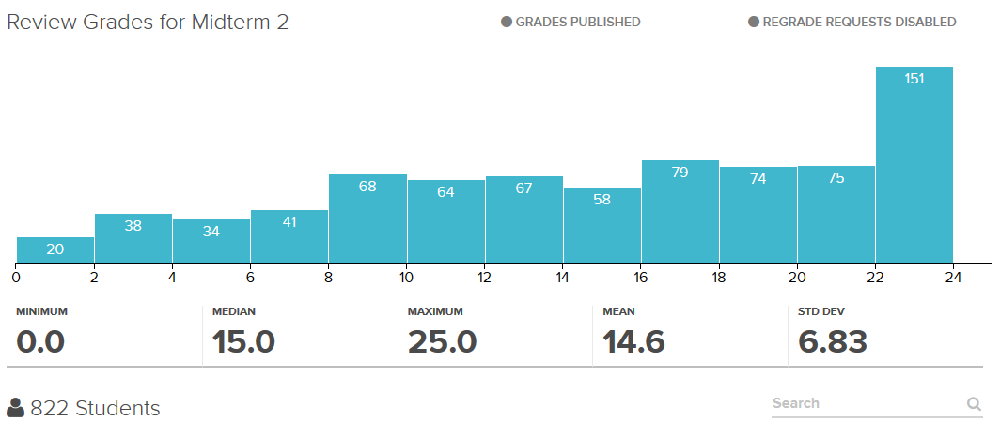

It's not really much of a mystery as to why I wound up here. I've had yet to live anywhere else but California my whole life, so it only makes sense that I attended school here as well. The hour and a half drive away from home didn't seem like much until I met my first out-of-state friend.
So just exactly HOW did I get here?
Bay Area Culture
Just filler text until I find a way to show my gratitude for this school without coming off too #soft.
The FitnessGram Pacer Test is a multistage aerobic capacity test that progressively gets more difficult as it continues. The 20 meter pacer test will begin in 30 seconds. Line up at the start. The running speed starts slowly but gets faster each minute after you hear this signal bodeboop. A sing lap should be completed every time you hear this sound. ding Remember to run in a straight line and run as long as possible. The second time you fail to complete a lap before the sound, your test is over. The test will begin on the word start. On your mark. Get ready!… Start. ding
How much more filler does this page need?
 My semester's Math 1B Midterm 2 Grade DistributionDid I in my heart know that I wanted to go to a school where I would get destroyed by the curve? Absolutely not. But would I have it any other way? No.